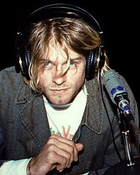
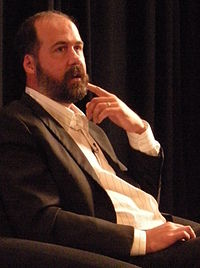
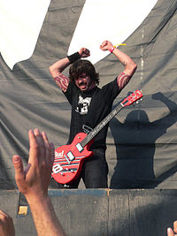

|  |
Ο Kurt Cobain γεννήθηκε στις 20 Φεβρουαρίου 1967,ενώ άρχισε να αναπτύσσει ένα ενδιαφέρον στη μουσική νωρίς στη ζωή του. Για τα 14α γενέθλιά του ο θείος του τον έβαλε να διαλέξει ανάμεσα σε μια κιθάρα και σε ένα ποδήλατο για δώρο. Ο Κομπέιν διάλεξε την κιθάρα. Η στιγμή εκείνη ήταν καταλυτική για την δημιουργία ενός από των πιο επιτυχημένων μουσικών συγκροτημάτων όλων των εποχών,με τους Nirvana να γνώριζουν τεράστια εμπορική επιτυχία και απήχηση,η οποία δυστυχώς διακόπηκε απότομα όταν ο Kurt έβαλε τέλος στην ζωή του στις 5 Απριλίου 1994. |
|  |
Ο Krist Novoselic γεννήθηκε το Μάιο του 1965 και έχει γίνει γνωστός στο κοινό ως ο μπασίστας του συγκροτήματος. Δημιούργησε το συγκρότημα με τον φίλο και συνεργάτη του Kurt Cobain, που αποτελούσε τον κιθαρίστα και τραγουδιστή του συγκροτήματος, ενώ έχει συμμετάσχει και σε άλλα ροκ συγκροτήματα, όπως οι FOO FIGHTERS του πρώην ντράμερ των Nirvana Ντέιβ Γκρολ, στους Aya, στους Sweet 75 και σε πολλά άλλα. Εκτός από τραγουδιστής είναι πολιτικός, συγγραφέας και σκηνοθέτης. |
|  |
O David "Dave" Grohl ξεκίνησε την ενασχόληση του με την μουσική στην ηλικία των 12, παίρνοντας μαθήματα κιθάρας.Στα 17 του εκδήλωσε ιδιαίτερο ενδιαφέρον για τα ντραμς,ενώ έγινε ο ντράμερ του συγκροτήματος Freak Baby. Σε μια συναυλία τους τον έιδαν οι Kurt Cobain & Krist Novoselic και λίγους μήνες αργότερα έπαιζε ντραμς για τους Nirvana. Αξιοσημείωτα,το 1995 (θέλοντας να συνεχίσει την μουσική του καριέρα μετά τον θάνατο του Cobain) δημιούργησε τους Foo Fighters,όπου και έπαιζε κιθάρα. |